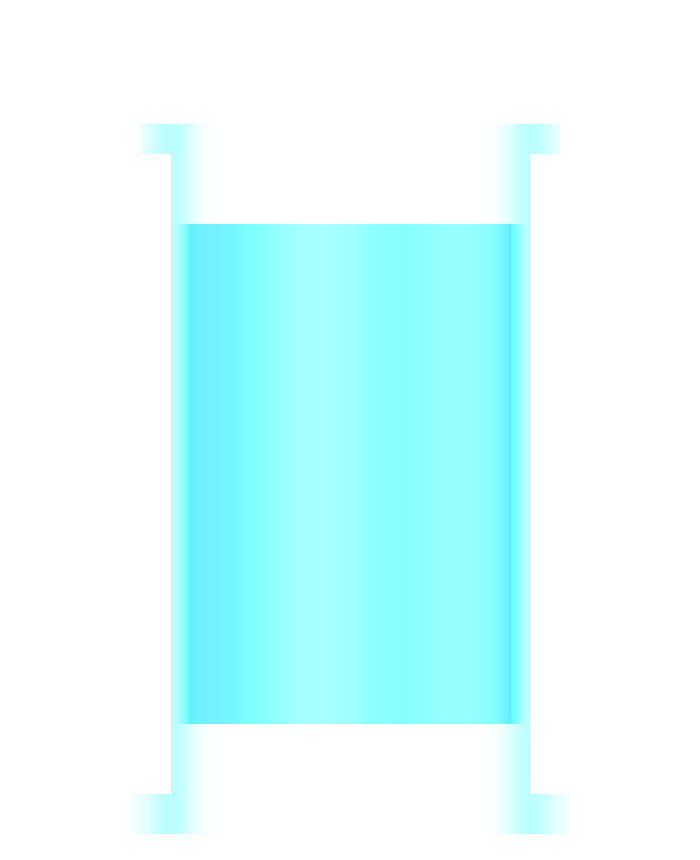
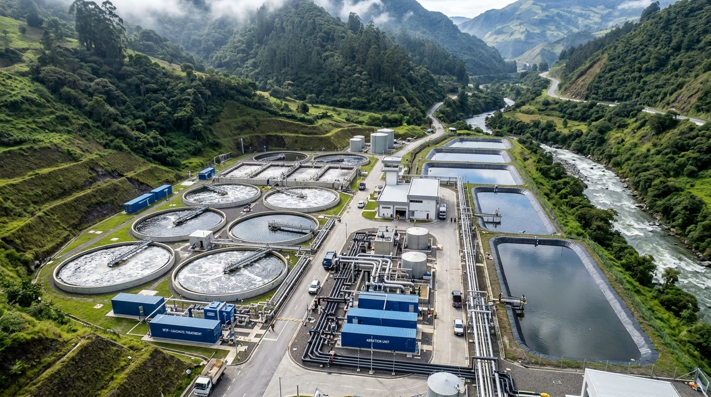
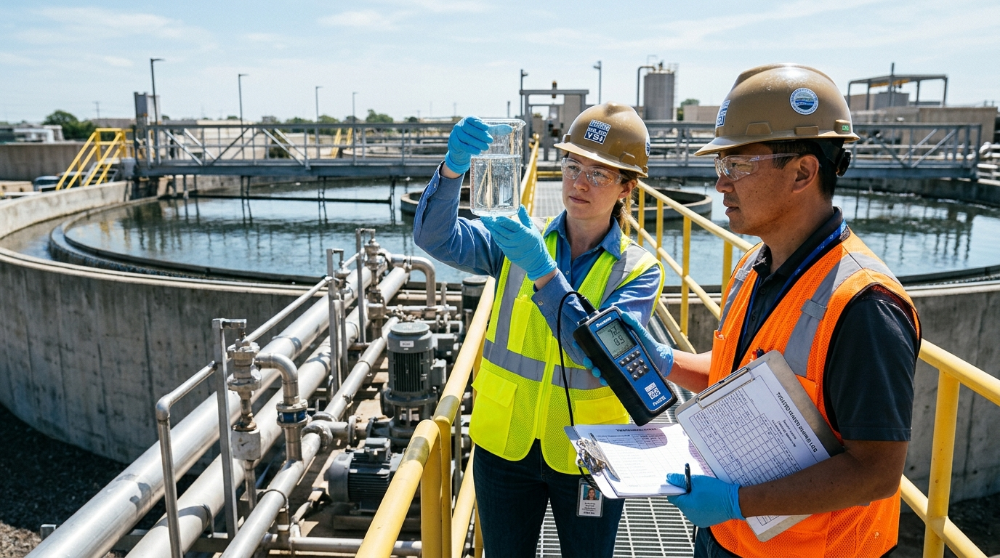
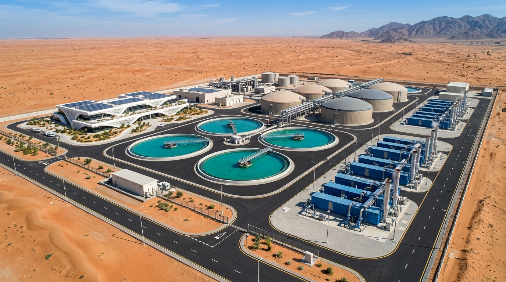
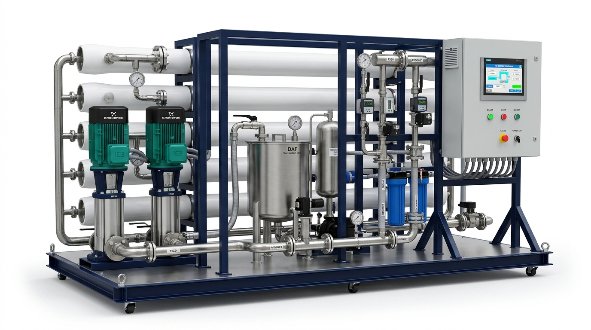

Water.
Technology.
Possibility.
Water purification and industrial effluent processing
Technology for
a world of water.
Hydro designs, constructs, installs and operates effective water treatment solutions.
Designed around each client
End-to-end treatment solutions combine modular process steps for industrial and drinking water applications.
Proprietary technology. Global deployment.
Patented technologies and processes support solutions across a wide range of industries and geographies.
From design
to operation.
Design
Custom solutions for industrial and drinking water applications.
Construct
Treatment systems built around modular process steps.
Install
Deployment across different industries and geographies.
Operate
Operation of effective water treatment solutions.
Experience
with impact.
A legacy of dealing with complexity
Protecting
river basins.
Hydro built a leachate treatment plant to treat a chemically toxic mixture of heavy metals and carbon-based pollutants, allowing treated water to return safely to the environment.

A measurable
difference.
Hydro reviewed one of the most polluting mines in Wales and applied its electro-coagulation technology.
Clear results.
Measured.
Four treatment plants used Hydro Current technology to remove suspended particles from construction runoff.
Treatment met stringent water quality standards enforced by the Environment Agency.
Complex water.
Clear evidence.
Example of a Hydro treatment configuration, comparing input water, treated water and output requirements.
| Parameter | Input | After Hydro Treatment | Output Requirement |
|---|---|---|---|
| COD (Chemical Oxygen Demand) | 4,856 | 26 | 100 |
| Oil & grease | 300 | 2 | 15 |
| TSS (Total Suspended Solids) | 250 | 3 | 60 |
| BOD (Biochemical Oxygen Demand) | 2,050 | 8 | 60 |
| Total nitrogen | 400 | 7 | 10 |
| Ammonia | 247 | 2 | 3 |
A history of
progress.

Hydro founded
The beginning of Hydro Industries.
BEE’AH commissioned
Wastewater treatment plant in Sharjah, UAE.
Quito leachate plant
Project completed in Q3 2024.
Group development
JEMS Environmental team joins the Hydro Group.
Expanding applications
Projects include Sucre, Montecristi and Santa Cruz.
One group.
International
presence.
Hydro Industries Limited
United Kingdom
Wholly owned entities support the group’s international presence, alongside a joint venture office in Bahrain.
Wastewater.
New purpose.
A treatment system for landfill liquid waste and local industrial effluent, engineered to provide irrigation-quality water for reuse.
Approx. / October 2026

More freshwater.
Higher yield.
Hydro’s development case describes reduced brine reject and lower energy consumption alongside higher freshwater yields.
Recover.
Reuse. Repeat.

Hydro is building a plant designed to reduce pressure on local groundwater. Hydro will also operate and maintain the facility.
Deck Matrix Overview 13 Slides
Keyboard & Mouse Controls
| → / Space | Next Slide |
| ← | Previous Slide |
| D / Enter | Toggle "See Details" Drawer |
| G | Toggle Deck Grid Matrix (13 Slides) |
| F | Toggle Fullscreen Mode |
| A | Toggle Hands-Free Auto-Play Walkthrough |
| P | Toggle Presenter Mode (Clean UI) |
| Esc | Close any Active Modal / Drawer |
| Wheel / Swipe | Smooth Slide Transitions |